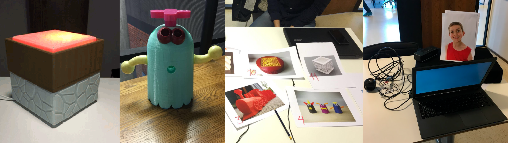

Formdommer - Interaksjonsdesign
INF2260 - Interaksjonsdesign er et emne ved Universitetet i Oslo som jeg avholdt høsten 2016. Prosjektet gikk ut på følgende: "How might we re-imagine the positioning and interactions of voice based smart devices in our homes that goes beyond the notion of robotic attendants?"
I dette prosjektet eksplorerte vi hvordan ulike former, figurer og stemmer påvirket hvordan brukere interagerte med stemmebasert kunstig intelligens. Vi startet med enkle prototyper og reelle stemmeassistenter for å se hvordan mennesker forholder seg til stemmebasert styring og hvorfor de eventuelt ikke bruker det. Etter å testet hvordan brukerne snakket med ulike bilder gikk vi over til fysiske 3D-printede objekter for å se om samhandlingen var annerledes. For å skape en "smartere" og raskere stemmeassistent, eksperimenterte vi oss med en form for Wizard of Oz hvor vi skrev inn i et text-to-speech program med livnære stemmer gjennom en bluetooth høyttaler til brukeren.
I de observasjonene vi utførte, endte vi opp med tydelige forskjeller i interaksjonen med de to ulike formene og stemmene. Den barnslige figuren (Elias, som representerte en ung gutt), og den mer sofistikerte figuren (Bente, som representerte en eldre dame) hadde klare forskjeller når det gjaldt nivå av kommunikasjon og hvilke spørsmål som ble stilt av brukeren.